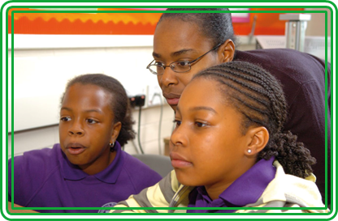

Recognise common uses of information technology beyond school
Digital technology is a part of all our lives, with almost no sphere untouched by it. A Key Stage 1 pupil might be woken by a digital alarm clock, have a bowl of microwaved porridge for breakfast, and then watch digital TV or play an iPad game before travelling to school, their journey guided or tracked via GPS.

While they’re at school, their attendance, progress and lunch are tracked through the management information system, they engage in activities on tablets, and research things on the web. Their parents use digital technology at work, perhaps using computerised control and monitoring equipment in manufacturing, productivity suites in an office, or high-end digital tools in creative industries.
The ingredients for the evening meal may have been ordered online, or a parent may have scanned them at the supermarket, whose supply chain is controlled by smart systems. Evening entertainment might be computer gaming with a Wii or Kinect. Parents and older siblings socialise on smartphones or laptops, and the book at bedtime might be read on an e-book reader.
There are many opportunities for pupils to consider the applications of algorithms, programs and systems.